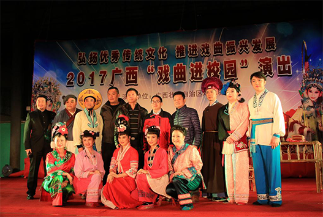
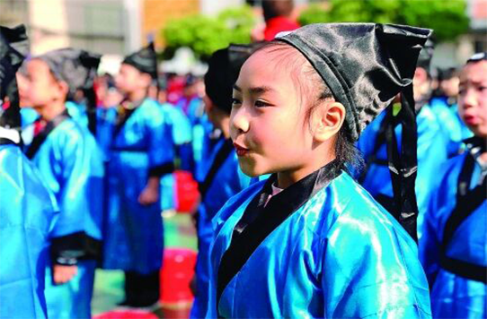
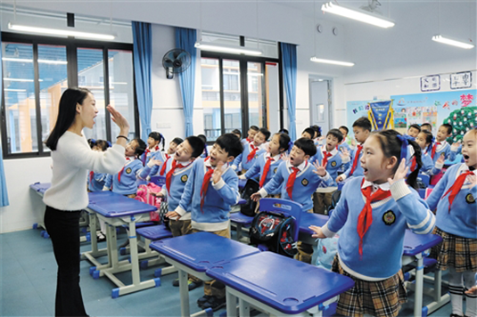

【Wenchuang Vision】
A cultural ecological reserve refers to the restoration of an intangible cultural heritage by taking effective protective measures in a specific area.
At present, the preliminary planning text of the Guangxi Ecological Protection Area has been completed. Continue to coordinate and promote the work of the “Zhuang Culture (Baise) Ecological Protection Zone” to declare the national cultural and ecological protection zone.region-level Yi culture.
Digital protection of cultural relics
Realistically present cultural heritage scenes and inquire about cultural relics.
"Finding Dreams, Liu Sanjie"
Under the integration of new technology, vividly reproduce the origin, development, promotion and inheritance of Liu Sanjie’s songs.
Film promotion
"The Gongcheng Yao Family Courtyard Film and Television Tourism Base" is the first open Internet film and television professional scenic.
Chinese-American “seeking roots”
A group of 41 Chinese-American teenagers from the United States conducted a “root-seeking” trip in Liuzhou, Guangxi.

Heritage is the best development
Guigang City, 2018, "The Opera Enters the Campus" tour Performance activities into Daling Junior High School
Sanjiang: The Yi people's "non-legacy" culture enters the campus
Promote the use of Zhuangwen to protect traditional "cultural genes"
The value orientation of young students represents the future of the country. It has laid a profound foundation for Chinese culture since childhood, related to the formation of cultural consciousness and cultural self-confidence, the realization of the goal of national cultural modernization construction and the contribution of Chinese culture to world civilization. Excellent traditional culture is a good thing, campus is also a good place, and children are the hope of the future. Intensify training and learning in traditional cultural education, because their traditional cultural literacy will directly affect the inheritance and innovation of the traditional culture of the next generation of young people. "Children have been exposed to traditional culture since childhood, so that excellent traditional culture can be passed down from generation to generation.